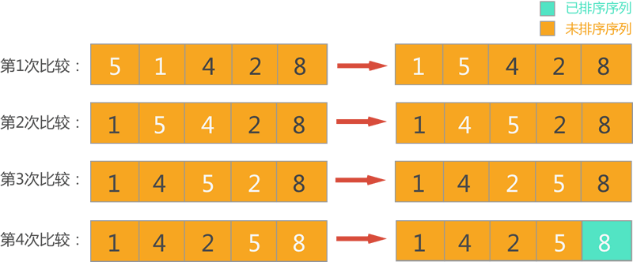
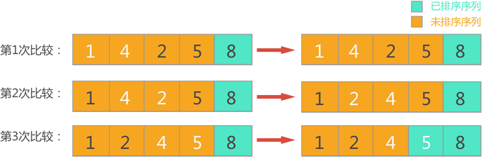
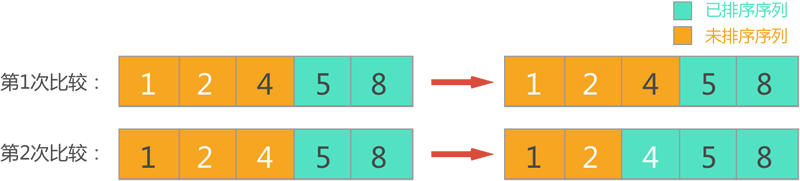
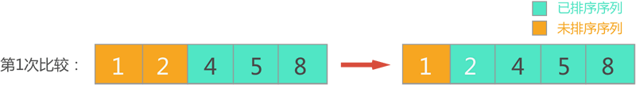
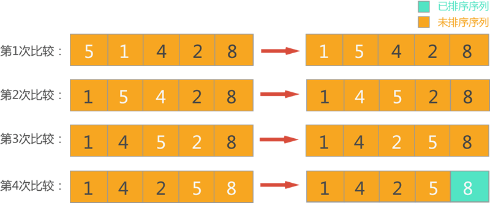
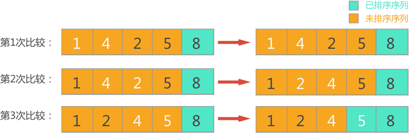
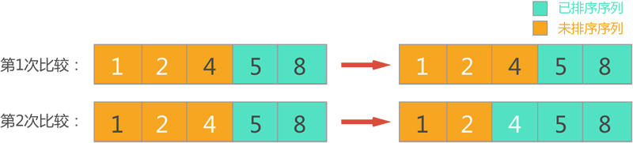
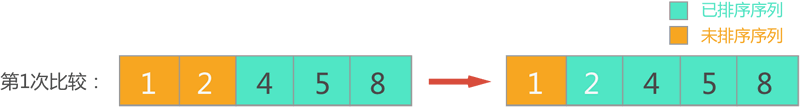

首页 > 编程笔记
冒泡排序算法（超级详细）
冒泡排序是一种简单的排序算法，它也是一种稳定排序算法。其实现原理是重复扫描待排序序列，并比较每一对相邻的元素，当该对元素顺序不正确时进行交换。一直重复这个过程，直到没有任何两个相邻元素可以交换，就表明完成了排序。
1) 第一轮排序，此时整个序列中的元素都位于待排序序列，依次扫描每对相邻的元素，并对顺序不正确的元素对交换位置，整个过程如图 1 所示。

图 1 第一轮排序（白色字体表示参与比较的一对相邻元素）
从图 1 可以看到，经过第一轮冒泡排序，从待排序序列中找出了最大数 8，并将其放到了待排序序列的尾部，并入已排序序列中。
2) 第二轮排序，此时待排序序列只包含前 4 个元素，依次扫描每对相邻元素，对顺序不正确的元素对交换位置，整个过程如图 2 所示。

图 2 第二轮排序
可以看到，经过第二轮冒泡排序，从待排序序列中找出了最大数 5，并将其放到了待排序序列的尾部，并入已排序序列中。
3) 第三轮排序，此时待排序序列包含前 3 个元素，依次扫描每对相邻元素，对顺序不正确的元素对交换位置，整个过程如图 3 所示。

图 3 第三轮排序
经过本轮冒泡排序，从待排序序列中找出了最大数 4，并将其放到了待排序序列的尾部，并入已排序序列中。
4) 第四轮排序，此时待排序序列包含前 2 个元素，对其进行冒泡排序的整个过程如图 4 所示。

图 4 第四轮排序
经过本轮冒泡排序，从待排序序列中找出了最大数 2，并将其放到了待排序序列的尾部，并入已排序序列中。
5) 当进行第五轮冒泡排序时，由于待排序序列中仅剩 1 个元素，无论再进行相邻元素的比较，因此直接将其并入已排序序列中，此时的序列就认定为已排序好的序列（如图 5 所示）。

图 5 冒泡排序好的序列
冒泡排序的实现代码为（C 语言）：
假设待排序序列为 (5,1,4,2,8)，如果采用冒泡排序对其进行升序（由小到大）排序，则整个排序过程如下所示：一般情况下，称某个排序算法稳定，指的是当待排序序列中有相同的元素时，它们的相对位置在排序前后不会发生改变。
1) 第一轮排序，此时整个序列中的元素都位于待排序序列，依次扫描每对相邻的元素，并对顺序不正确的元素对交换位置，整个过程如图 1 所示。

图 1 第一轮排序（白色字体表示参与比较的一对相邻元素）
从图 1 可以看到，经过第一轮冒泡排序，从待排序序列中找出了最大数 8，并将其放到了待排序序列的尾部，并入已排序序列中。
2) 第二轮排序，此时待排序序列只包含前 4 个元素，依次扫描每对相邻元素，对顺序不正确的元素对交换位置，整个过程如图 2 所示。

图 2 第二轮排序
可以看到，经过第二轮冒泡排序，从待排序序列中找出了最大数 5，并将其放到了待排序序列的尾部，并入已排序序列中。
3) 第三轮排序，此时待排序序列包含前 3 个元素，依次扫描每对相邻元素，对顺序不正确的元素对交换位置，整个过程如图 3 所示。

图 3 第三轮排序
经过本轮冒泡排序，从待排序序列中找出了最大数 4，并将其放到了待排序序列的尾部，并入已排序序列中。
4) 第四轮排序，此时待排序序列包含前 2 个元素，对其进行冒泡排序的整个过程如图 4 所示。

图 4 第四轮排序
经过本轮冒泡排序，从待排序序列中找出了最大数 2，并将其放到了待排序序列的尾部，并入已排序序列中。
5) 当进行第五轮冒泡排序时，由于待排序序列中仅剩 1 个元素，无论再进行相邻元素的比较，因此直接将其并入已排序序列中，此时的序列就认定为已排序好的序列（如图 5 所示）。
图 5 冒泡排序好的序列
冒泡排序的实现代码为（C 语言）：
#include <stdio.h>
//交换 a 和 b 的位置的函数
#define N 5
int a[N] = { 5,1,4,2,8 };
void swap(int *a, int *b);
//这是带输出的冒泡排序实现函数，从输出结果可以分析冒泡的具体实现流程
void BubSort_test();
//这是不带输出的冒泡排序实现函数，通过此函数，可直接对数组 a 中元素进行排序
void BubSort_pro();
int main()
{
BubSort_test();
return 0;
}
void swap(int *a, int *b) {
int temp;
temp = *a;
*a = *b;
*b = temp;
}
//这是带输出的冒泡排序实现函数，从输出结果，可以看到冒泡的具体实现流程
void BubSort_test() {
for (int i = 0; i < N; i++) {
//对待排序序列进行冒泡排序
for (int j = 0; j + 1 < N - i; j++) {
//相邻元素进行比较，当顺序不正确时，交换位置
if (a[j] > a[j + 1]) {
swap(&a[j], &a[j + 1]);
}
}
//输出本轮冒泡排序之后的序列
printf("第%d轮冒泡排序：", i + 1);
for (int i = 0; i < N; i++) {
printf("%d ", a[i]);
}
printf("\n");
}
}
//这是不带输出的冒泡排序实现函数，通过此函数，可直接对数组 a 中元素进行排序
void BubSort_pro() {
for (int i = 0; i < N; i++) {
//对待排序序列进行冒泡排序
for (int j = 0; j + 1 < N - i; j++) {
//相邻元素进行比较，当顺序不正确时，交换位置
if (a[j] > a[j + 1]) {
swap(&a[j], &a[j + 1]);
}
}
}
}
运行结果为：
第1轮冒泡排序：1 4 2 5 8
第2轮冒泡排序：1 2 4 5 8
第3轮冒泡排序：1 2 4 5 8
第4轮冒泡排序：1 2 4 5 8
第5轮冒泡排序：1 2 4 5 8
O(n2)，最优时间复杂度为O(n)，平均时间复杂度为 O(n2)。关注公众号「站长严长生」，在手机上阅读所有教程，随时随地都能学习。内含一款搜索神器，免费下载全网书籍和视频。

微信扫码关注公众号